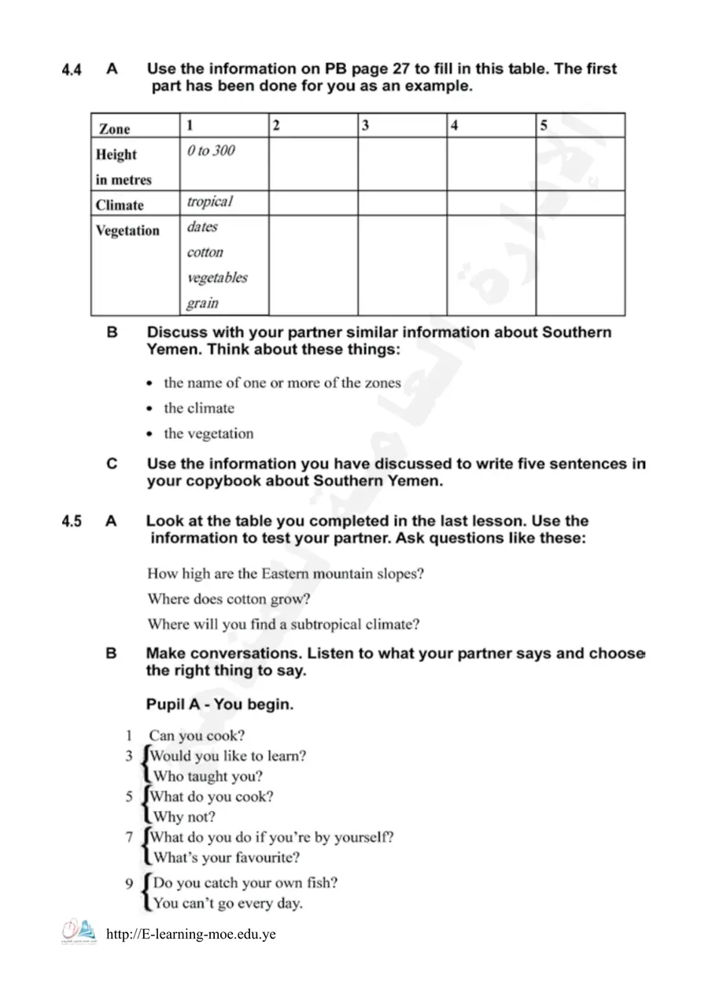

4.5 A Look at the table you completed in the last lesson. Use the information to test your partner. Ask questions like these:
How high are the Eastern mountain slopes?
Where does cotton grow?
Where will you find a subtropical climate?
B Make conversations. Listen to what your partner says and choose the right thing to say.
Pupil A - You begin.
1 Can you cook?
3 { Would you like to learn? | Who taught you? }
5 { What do you cook? | Why not? }
7 { What do you do if you're by yourself? | What's your favourite? }
9 { Do you catch your own fish? | You can't go every day. }
(WB p. 45) Pupil B - Your partner begins.
2 { Yes, I can. | No, I can't. }
4 { No, not really. | My aunt. }
6 { I don't have to. | Lots of things. Fish, lamb, rice, vegetables. }
8 { I go to a restaurant. | Fish. I love fish. }
10 { No. I haven't got a boat. | Why not? }
C Prepare some notes in your copybooks on the zone you live in. Be ready to tell the rest of the class about it if you are asked.[
{
"num": 1,
"question": "How high are the Eastern mountain slopes?",
"model_answer": "From 2,300 metres down to 1,100 metres (2,300 -1,100m).",
"explain_ar": "من بيانات المنطقة الرابعة في الجدول وPB ص 27."
},
{
"num": 2,
"question": "Where does cotton grow?",
"model_answer": "In Zone 1 — the Tihamah on the Red Sea (0 to 300m).",
"explain_ar": "يُزرع القطن والتمور والخضراوات والحبوب في السهل التهامي."
},
{
"num": 3,
"question": "Where will you find a subtropical climate?",
"model_answer": "In Zone 2 (Western mountain slopes) and Zone 4 (Eastern mountain slopes).",
"explain_ar": "تتصف المنحدرات الغربية والشرقية بمناخ شبه مداري."
}
][
{
"num": 1,
"prompt": "1 Partner says 'Yes, I can.' (Q2) → Turn 3 replies: ______",
"answers": [
"Who taught you?"
]
},
{
"num": 2,
"prompt": "2 Partner says 'No, I can't.' (Q2) → Turn 3 asks: ______",
"answers": [
"Would you like to learn?"
]
},
{
"num": 3,
"prompt": "3 Partner asks 'Why not?' after 'No, not really.' (Q5) → Turn 6 replies: ______",
"answers": [
"I don't have to."
]
},
{
"num": 4,
"prompt": "4 Partner asks 'What's your favourite?' (Q7) → Turn 8 replies: ______",
"answers": [
"Fish. I love fish."
]
},
{
"num": 5,
"prompt": "5 Partner asks 'Do you catch your own fish?' (Q9) → Turn 10 replies: ______",
"answers": [
"No. I haven't got a boat."
]
},
{
"num": 6,
"prompt": "6 Partner says 'You can't go every day.' (Q9) → Turn 10 replies: ______",
"answers": [
"Why not?"
]
}
][
{
"label_ar": "1) اسم المنطقة وارتفاعها عن سطح البحر",
"placeholder": "Zone: Central Highlands (Sana'a / Dhamar) — Height: about 2,200 to 2,400 metres."
},
{
"label_ar": "2) المناخ صيفاً وشتاءً وهطول الأمطار",
"placeholder": "Climate: moderate with warm days, summer rains, and cold winter nights."
},
{
"label_ar": "3) المحاصيل والفواكه التي تشتهر بها منطقتك",
"placeholder": "Vegetation: sorghum, wheat, grapes, apricots, peaches and figs grown on terraces and in wadi beds."
}
]{
"wb_ocr_vs_image": "قُورنت صفحتا WB ص 44–45 مع tesseract.js eng: أخرجت OCR تشوهاً في خيارات المحادثة ('Ss you like', '{oa do you', '{ £0 to', 'fn not?'), وصُحّحت كلها بصرياً بالرجوع إلى wb-045.png وwb-046.png."
}